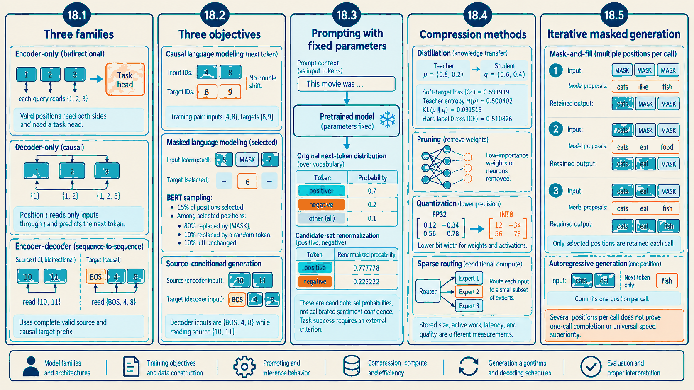
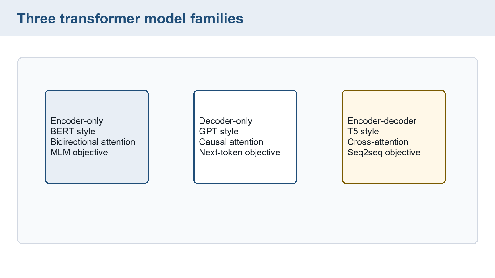
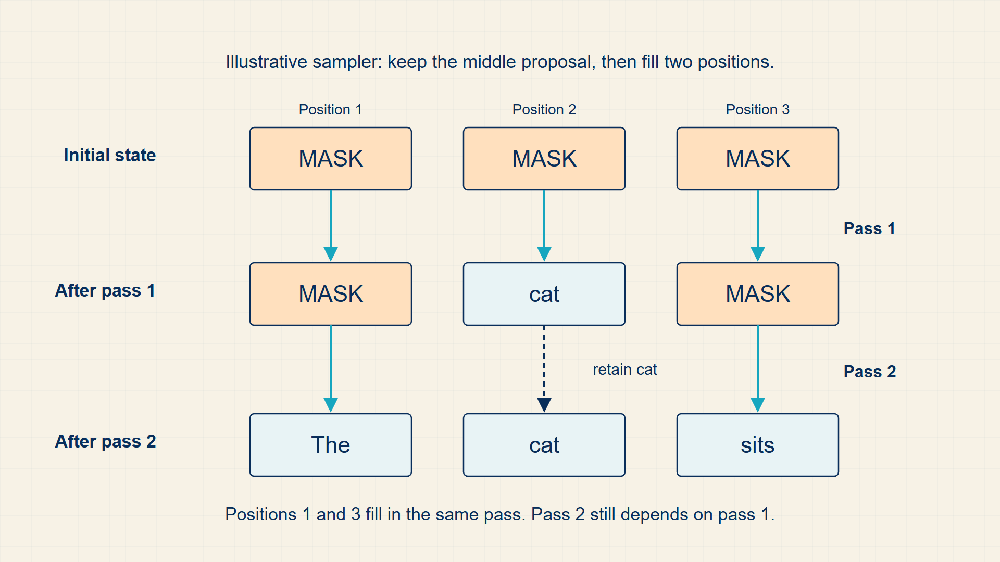

18 Transformer families: Visibility, targets, and generation
A classifier may read a complete review, while a next-token predictor must hide its answer in the unseen continuation. Translation supplies a complete source sentence but only an earlier target prefix. These differences determine which positions may exchange information and which output scores can be judged against targets.
The same block components support several arrangements. Architecture specifies their connections, an objective specifies the training comparisons, and an inference procedure specifies how outputs are produced.

18.1 Inputs and readable positions in three families
The input available at a prediction position determines what attention may read. All words in a review are available for classification. The next generated word is not available when its probability is calculated.
An encoder-only transformer processes an input with bidirectional attention over permitted positions. It returns contextual representations, which need a task head for class labels, token labels, or reconstruction scores. Its family name alone does not prescribe a training objective.
A decoder-only transformer commonly uses causal self-attention for continuation. Position \(t\) reads input positions through \(t\) and produces next-token logits. The recorded \(x_{t+1}\) supplies a training or evaluation target, while generation selects a token without that reference.
An encoder-decoder transformer first represents a source sequence. Its decoder applies causal self-attention to an earlier target prefix and cross-attention to the encoded source. Source and target lengths can differ.
For a three-token source, an unrestricted encoder query can read source positions 1, 2, and 3. A three-position causal decoder instead has readable sets \(\{1\}\), \(\{1,2\}\), and \(\{1,2,3\}\). In an encoder-decoder, every valid target query may additionally read all three valid source positions. Source padding remains excluded.
The table compares concrete task arrangements. Its target column describes training or evaluation reference information, not extra inference input.
| Task and family | Input and visibility | Output and target |
|---|---|---|
| Review classification with an encoder | Complete review, bidirectional valid positions | One class-score row and review label |
| Continuation with a causal decoder | Available prefix, no future target tokens | Vocabulary scores and following-token targets |
| Translation with an encoder-decoder | Complete source and causal target prefix | Target-language scores and next target tokens |
For encoder classification, pooling or a designated token supplies one vector to the classifier head. For token labeling, each valid position supplies its own representation. The decoder’s token head instead scores vocabulary entries at each eligible prediction position.
The original GPT adaptation recipe shows how a causal model can supply task outputs beyond the next word. Special markers separate input fields and mark their boundaries. The representation at the final marker goes to a linear task head.1
- For classification, one text sequence supplies the final representation, and the head returns class scores.
- Entailment is the relationship in which a hypothesis follows from a premise. The classifier predicts that relationship. The input places the premise first, then a separator, then the hypothesis. The head classifies their relationship.
- For symmetric sentence similarity, the model processes both sentence orders separately with the same parameters. Their final representations are added before the task head scores similarity.
- For multiple choice, each candidate answer forms a separate sequence with the context and question. A shared task head scores each sequence. Softmax converts those scores into probabilities over the answers.
Task-specific training fits the head and model parameters using labeled examples. This recipe differs from §18.3’s use of an existing vocabulary head with a task prompt and fixed parameters. Chapter 20 develops the adaptation choices.
The targets in this section belong to training or evaluation. Inference instead selects class or token outputs without receiving those recorded answers.
The transformers library provides model classes for these arrangements. Choosing a class also chooses an input and loss interface. The supplied masks, heads, and targets must agree with that interface rather than relying only on a family label.

The figure lists common family and objective choices. Its encoder-decoder column omits the causal target self-attention stated above. The numerical visibility example distinguishes full input context, a causal prefix, and source-conditioned decoding. Each setup has its own readable-position rule. The next section specifies the reference answers used to score each setup.
18.2 Causal, masked, and source-conditioned objectives
Visibility limits information, but a training batch still needs exact reference answers. A causal continuation, a corrupted input, and a separate target sequence construct those answers differently.
Pretraining fits a model on an initial broad training objective before its later task use or adaptation. The following objectives provide different learning signals for that initial fitting.
A causal language-model objective sums negative log probabilities of recorded tokens given earlier context:
\[ L_{\mathrm{CLM}}=-\sum_t\log P_{\theta}(x_t\mid x_{<t}) \tag{18.1}\]
The index \(t\) runs over included targets, \(x_t\) is the recorded token, and \(\theta\) identifies the current parameters. This displayed objective is a sum. Dividing by the positive included-position count gives the mean used in §8.5. Padding and other excluded targets contribute to neither that sum nor its divisor.
The familiar following-token alignment is
\[ \begin{aligned}\operatorname{input}_t&=x_t,\\\operatorname{label}_t&=x_{t+1}\end{aligned} \tag{18.2}\]
For IDs \([4,8,9]\), inputs \([4,8]\) align with targets \([8,9]\). The first query predicts 8 from input 4. Allowing it to read the second input, 8, would expose that reference answer. Causal attention must therefore block that later input even though both inputs belong to the recorded sequence. If EOS is present, it can be a target for its preceding input. The final recorded token still has no following target inside the sequence. The shift rule in §8.5 applies: use either model-internal or manual alignment, never both.
Masked language modeling, abbreviated MLM and introduced in §3.3, selects positions and prepares a corresponding training input while retaining their original tokens as reference answers. Input preparation and answer selection are separate: a selected token can be replaced or left unchanged under the recipe. The simplified example below first shows replacement by MASK.
In a simplified always-MASK example, let \(\mathcal S_{\mathrm{mask}}\) be the set of selected position indices. The original sequence \(x\) becomes input \(x'\) according to
\[ x'_t=\begin{cases}\mathrm{MASK},&t\in\mathcal S_{\mathrm{mask}},\\x_t,&\text{otherwise}\end{cases} \tag{18.3}\]
The membership test \(t\in\mathcal S_{\mathrm{mask}}\) determines whether original ID \(x_t\) is replaced. The original token at every selected position is saved as its target. Only the selected prediction positions contribute to this example’s objective.
For \(x=[5,6,7]\) and \(\mathcal S_{\mathrm{mask}}=\{2\}\), the model receives \([5,\mathrm{MASK},7]\), where MASK stands for its vocabulary ID. Its prediction at position 2 is compared with target 6. The unselected positions provide context but no prediction targets under this selection. The input gap and target therefore remain separate objects.
This example replaces every selected position with MASK. Original BERT uses the broader replacement recipe below. A selected position supplies a real prediction target, while padding fills unused batch storage under the §2.2 convention. The MLM loss compares predictions at selected positions with their original tokens:
\[ L_{\mathrm{MLM}}=-\sum_{t\in\mathcal S_{\mathrm{mask}}}\log P_{\theta}(x_t\mid x') \tag{18.4}\]
The input corruption rule determines what each selected position contains. The model can read permitted context on both sides. The sum includes every selected target, even when its changed input is not a MASK token.
BERT, Bidirectional Encoder Representations from Transformers, is an encoder model. Its original training recipe selects 15% of token positions. Among selected positions, 80% receive [MASK], 10% a random token, and 10% retain the original token. The original token remains the target at each selected position, including the 10% that retain it as their input token. The percentages describe sampling probabilities, not exact counts required in every short sequence.2
BERT also distinguishes input segments A and B through learned segment embeddings, added alongside token and position embeddings. Its sequence format uses [CLS] A [SEP] B [SEP]. [SEP] marks the separation. Segment embeddings identify membership, but do not block cross-segment attention.3
The original next sentence prediction objective, NSP, classifies whether B follows A in the corpus or is a random segment. Its sampling uses these two classes equally. A classifier on [CLS] supplies that separate loss, combined with MLM during the original pretraining. NSP and this segment protocol belong to the original BERT recipe. Other encoder training setups can use different objectives and input formats.4
For an encoder-decoder, source \(x_{\mathrm{source}}\) stays available while the target prefix grows:
\[ L_{\mathrm{seq2seq}}=-\sum_t\log P_{\theta}(y_t\mid y_{<t},x_{\mathrm{source}}) \tag{18.5}\]
Here \(y_t\) is the next target token and \(y_{<t}\) the earlier recorded target tokens supplied as decoder inputs during teacher forcing from §15.2. For source IDs \([10,11]\) and target \([4,8,9]\), decoder inputs can be [BOS,4,8]. The aligned targets are [4,8,9]. The target decoder’s first position reads BOS and the encoded source, not the unavailable target 4.
Example: Similar arithmetic, different reference events
Two causal target probabilities 0.5 and 0.25 give summed loss \(-\log0.5-\log0.25\approx2.079442\). Their mean is approximately 1.039721.
Two selected MLM targets with probabilities 0.8 and 0.4 give summed loss \(-\log0.8-\log0.4\approx1.139434\). Their mean is approximately 0.569717.
For a separate source-conditioned target sequence, probabilities 0.5 and 0.25 again give sum 2.079442. Those probabilities now condition on the source as well as the target prefix.
Conclusion: The same logarithm and reduction can score different prediction tasks. Equal numerical losses do not make their visible inputs, target positions, or inference procedures equivalent.
A pretrained model can later receive a task description as input without changing any parameter. That is a different operation from constructing targets for these updates.
18.3 Task prompting with fixed parameters
A language model’s token distribution can be used to answer a classification question when the prompt specifies its output form. The desired label becomes an output string, while the parameters stay fixed.
The prompt introduced in §7.1 can include a task instruction or an example. Changing that input context can change the output while leaving the model parameters fixed.
Consider the sentiment prompt The sentiment of the sentence "I like Jackie Chan" is:. The input includes the text to classify and the requested relationship. A fixed language model can score candidate completions positive and negative.
Suppose, for a chosen arithmetic illustration, these labels each occupy one token and have probabilities 0.7 and 0.2 at that position. Restricting the decision to those two candidates selects positive. Renormalizing within the allowed labels would give \(0.7/0.9\approx0.777778\) and \(0.2/0.9\approx0.222222\). The remaining original mass 0.1 belonged to other tokens.
The reference sentiment label is needed only to evaluate that choice. The renormalized values describe a constrained candidate set, not automatically calibrated sentiment confidence. If a label requires several tokens, its probability must use the probability of the complete candidate under the declared scoring rule.
Scoring a candidate continuation uses the sequence factorization from §1.2. Each successive-token factor also conditions on the fixed prompt. The resulting probability measures the model’s assigned likelihood, not whether the candidate satisfies the task.
For a question-answering prompt, use Q: Who wrote the book "The Origin of Species"? A:. A continuation may begin Charles, while Charles Darwin is the reference answer. Selecting that first token alone does not complete the answer or establish factual accuracy. Compare the generated completion with the reference.
For summarization, append the marker tl;dr to a document. That literal prompt string requests a short continuation under a learned convention. A summary’s relevance and source faithfulness still need evaluation, as §9.4 explained. Changing the prompt may change the generated text without fitting parameters to that document.
Conclusion: A prompt can turn token continuation into a task interface, but the task supplies its own success criterion. Prompt changes, parameter training, and output evaluation affect different objects. Other design changes alter the stored model or the generation procedure itself.
18.4 Model compression
Reducing parameter storage, reducing active computation, and changing the sequence-generation schedule address different constraints. They cannot be compared as interchangeable methods using parameter count alone.
A small language model is a relatively low-parameter language model selected for a stated resource and task budget. There is no universal size cutoff. It can be trained from scratch or adapted from another model. A smaller parameter count alone guarantees neither lower latency for every workload nor adequate task quality.
Reducing the stored model can make local execution possible within a device’s memory. That can avoid sending inputs to a remote service and support use without a network connection. Lower runtime, energy use, and cost remain measurements to compare for the actual workload. A narrow training domain can leave important inputs poorly represented, and limited capacity can reduce accuracy on demanding tasks. Evaluate those failures, including uneven errors across relevant groups, before choosing the smaller model. Distillation offers one way to train it using a larger model’s outputs.
Distillation trains a student to match information supplied by a teacher. One form uses teacher output probabilities as soft targets. The teacher remains fixed while the student receives gradients. Hard labels may supply another loss term, and some variants also compare compatible intermediate representations.5
With a common two-class vocabulary, let teacher probabilities be \(p=(0.8,0.2)\) and student probabilities \(q=(0.6,0.4)\). The soft-target loss is \(-0.8\log0.6-0.2\log0.4\approx0.591919\). If the student matches \(p\), the value becomes the teacher entropy, approximately 0.500402. The reduction of about 0.091516 is the mismatch KL from §8.2.
Replacing the teacher distribution by hard label 0 would instead yield \(-\log0.6\approx0.510826\). That label discards the teacher’s 0.2 mass on the other class. Distillation can also soften both distributions using a declared positive temperature. A teacher’s errors and the chosen training examples can transfer to the student too.
Pruning removes selected weights or structures under a declared criterion, often followed by further fitting. For example, zeroing small weights creates a sparse matrix without shrinking its array shape. Deleting complete channels can change dimensions and requires compatible downstream changes. Actual speed depends on whether the implementation exploits the resulting structure.
Quantization approximates retained values using a limited set of codes that require fewer storage bits. Chapter 20 develops their reconstruction. MoE routing selects active expert paths without removing all stored experts, as §17.7 explains. These methods can be combined, but their storage and computation effects must be measured separately.
Compression changes the stored model or the computation performed for a request. Its effect on memory, latency, energy use, and task quality depends on the chosen method and workload.
18.5 Iterative masked generation
Autoregressive generation commits to one new position at a time. A different generation schedule can revise several response positions across repeated model calls. This changes the order in which output positions become fixed, even when the model parameters remain unchanged.
A diffusion language model uses an iterative corruption-and-reconstruction formulation. In the discrete masked-token example LLaDA, training masks tokens at a sampled rate and fits predictions of their original values. Its loss weighting accounts for the masking rate. Generation begins with a masked response beside an available prompt, then repeatedly predicts and retains or remasks positions.6
In LLaDA’s supervised instruction training, the prompt stays visible and masking applies to response positions. Its EOS padding belongs to the trained response and contributes to the loss. At generation time, the requested initial response length determines the number of masked positions, and generated EOS padding is removed from the displayed answer. Thus masking policy, available prompt, and output-length policy are separate parts of the procedure.7
The following three-position illustration uses assumed token predictions and a chosen retention schedule.
| Call | Response input | Proposed completion | State retained afterward |
|---|---|---|---|
| 1 | MASK MASK MASK |
cats like fish |
cats MASK MASK |
| 2 | cats MASK MASK |
cats eat food |
cats eat MASK |
| 3 | cats eat MASK |
cats eat fish |
cats eat fish |
At the first model call, only cats is retained. The next call sees that retained word and revises the other positions. A final call fills the remaining position. The prompt stays available throughout, and the parameters remain fixed.
Conclusion: Several positions can be predicted within one model call, yet the output still requires repeated calls and changing response state. Low-confidence and blockwise remasking are particular strategies. This example does not establish a universal speed advantage over causal generation.8
The illustration jumps from one denoising box to a final sequence. The table supplies the intermediate states that it omits.

These family and generation choices specify the available inputs and the predictions an objective scores. Preparing records for that objective is a separate step. Chapter 19 follows how selected records and packed storage supply the inputs and reference answers used during pretraining.
Chapter checkpoint
Does an encoder necessarily require NSP? Does changing a task prompt train the model? Does masked diffusion produce the full answer in one guaranteed model call?
Answer: NSP belongs to the original BERT recipe, not every encoder. A prompt changes input context while ordinary inference keeps parameters fixed. The described diffusion sampler repeatedly evaluates and revises masked response positions. Its iteration count and speed need an explicit configuration and measurement.
Radford, A., Narasimhan, K., Salimans, T., & Sutskever, I. (2018). Improving language understanding by generative pre-training. §§3.2–3.3 and Figure 1.↩︎
Devlin, J., Chang, M.-W., Lee, K., & Toutanova, K. (2019). BERT: Pre-training of deep bidirectional transformers for language understanding. Proceedings of NAACL-HLT, 4171–4186, §3.1 and Appendix A.1.↩︎
Devlin, J., Chang, M.-W., Lee, K., & Toutanova, K. (2019). BERT: Pre-training of deep bidirectional transformers for language understanding. Proceedings of NAACL-HLT, 4171–4186, §3.1 and Appendix A.1.↩︎
Devlin, J., Chang, M.-W., Lee, K., & Toutanova, K. (2019). BERT: Pre-training of deep bidirectional transformers for language understanding. Proceedings of NAACL-HLT, 4171–4186, §3.1 and Appendix A.1.↩︎
Hinton, G., Vinyals, O., & Dean, J. (2015). Distilling the knowledge in a neural network. arXiv:1503.02531. The numerical probabilities here are illustrative.↩︎
Nie, S., et al. (2025). Large language diffusion models. arXiv:2502.09992, version 1, §§2.1–2.4. The table is a chosen masked-response trace, not reported model output.↩︎
Nie, S., et al. (2025). Large language diffusion models. arXiv:2502.09992, version 1, §§2.1–2.4. The table is a chosen masked-response trace, not reported model output.↩︎
Nie, S., et al. (2025). Large language diffusion models. arXiv:2502.09992, version 1, §§2.1–2.4. The table is a chosen masked-response trace, not reported model output.↩︎